湖南省2022年普通高中学业水平选择性考试 物理
注意事项：1．答卷前，考生务必将自己的姓名、准考证号填写在本试卷和答题卡上。2．回答选择题时，选出每小题答案后，用铅笔把答题卡上对应题目的答案标号涂黑。如需改动，用橡皮擦干净后，再选涂其他答案标号。回答非选择题时，将答案写在答题卡上。写在本试卷上无效。3．考试结束后，将本试卷和答题卡一并交回。
本册保留原卷第1—16题。其中1—14为必考题，15、16任选一题作答；两道选考题均完整解析，每题为5分＋8分，共13分。按原卷选考规则作答总分100分。
相关题目：第 1 题
本题共6小题，每小题4分，共24分。在每小题给出的四个选项中，只有一项是符合题目要求的。
相关题目：第 1 题 · 第 2 题 · 第 3 题 · 第 4 题 · 第 5 题 · 第 6 题
返回原卷说明与本册范围 返回一、选择题（24分）
题目与已知条件
关于原子结构和微观粒子波粒二象性，下列说法正确的是（ ）
查看原题图／原始配图
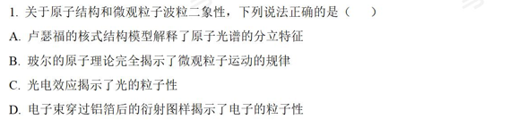
原始配图 1 · 原题及原图所用高中知识
核式结构模型；玻尔理论；光电效应；物质波。
分步解析
- 卢瑟福核式模型说明原子中心有很小、带正电的原子核，但不能解释线状原子光谱，A错误。
- 玻尔理论用量子化解释氢原子光谱，却保留了经典轨道等假设，并未完全揭示微观运动规律，B错误。
- 光电效应用光子的能量传递解释，显示光的粒子性，C正确；电子衍射显示电子的波动性，D错误。
检查与易错点
同一种微观对象可以在不同实验中显示波动性和粒子性，二者不是互相排斥的物质种类。
本题来源：paper · cross · drive-ref-1
返回一、选择题（24分）
题目与已知条件
如图，四根完全相同的均匀带正电绝缘长棒对称放置在长方体的四条长边a、b、c、d上。移去a处的绝缘棒，假定另外三根绝缘棒电荷分布不变。关于长方体几何中心O点处电场强度方向和电势的变化，下列说法正确的是（ ）
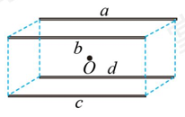
原长方体四棒a、b、c、d及几何中心O示意图。查看原题图／原始配图
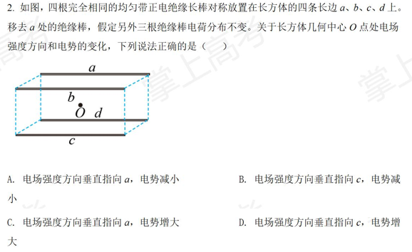
原始配图 1 · 原题及原图读题与思路
原四棒在中心的合场强为零，移去一棒等于减去它原先产生的场强。
分步解析
- 四根棒对称放置，每根棒在O处产生的场强均垂直于棒；对角棒的场强等大反向，因此原合场强为零。
- a棒为正，它在O处的场强背离a棒。剩余三棒的合场强为−Ea，因此垂直指向a棒。
- 以无穷远为电势零点，正棒在O处贡献正电势。移去a棒，其余三棒电荷分布不变，总电势减少。
检查与易错点
场强为零不意味着电势为零。电势只需相加，不能用方向抵消。
本题来源：paper · cross · drive-ref-1
返回一、选择题（24分）
题目与已知条件
如图(a)，直导线 被两等长且平行的绝缘轻绳悬挂于水平轴 上，其所在区域存在方向垂直指向 的磁场，与 距离相等位置的磁感应强度大小相等且不随时间变化，其截面图如图(b)所示。导线通以电流 ，静止后，悬线偏离竖直方向的夹角为 。下列说法正确的是（ ）
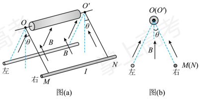
图(a)轴OO′和通电导线MN，图(b)截面径向磁场方向；原左右方位保留。A.当导线静止在图(a)右侧位置时，导线中电流方向由N指向M
C. 与电流 成正比
D. 与电流 成正比
查看原题图／原始配图
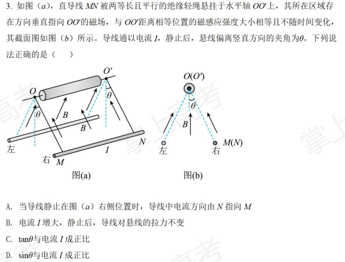
原始配图 1 · 原题及原图读题与思路
磁场方向沿悬线指向轴，安培力与悬线垂直。应沿圆弧切线列平衡方程。
分步解析
- 导线运动时到悬挂轴的距离不变，题设保证该圆弧上的B大小相同。安培力大小F安=BIL，始终沿圆弧切线。
- 切向平衡给BIL=mg sinθ，所以sinθ与I成正比，D正确；tanθ并非与I成正比，C错误。
- 径向平衡给两悬线拉力合力T=mg cosθ。I增大时θ增大，T减小，B错误。
- 导线在右侧时安培力须沿切线向右上方抵消重力的切向分量；按图中磁场方向用左手定则得电流由M到N，A的N到M错误。
检查与易错点
这里的安培力不是水平力，因此不能直接套用水平恒力悬摆的tanθ=F/(mg)。
本题来源：paper · cross · drive-ref-1
返回一、选择题（24分）
题目与已知条件
1932年，查德威克用未知射线轰击氢核，发现这种射线是由质量与质子大致相等的中性粒子（即中子）组成。如图，中子以速度 分别碰撞静止的氢核和氮核，碰撞后氢核和氮核的速度分别为 和 。设碰撞为弹性正碰，不考虑相对论效应，下列说法正确的是（ ）
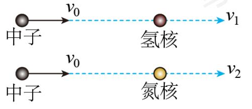
原中子分别碰撞氢核、氮核的示意图；入射速度均为v₀，核速度分别v₁、v₂。查看原题图／原始配图
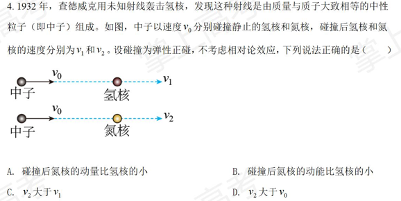
原始配图 1 · 原题及原图读题与思路
先用一般靶核质量M推导，再取氢核M≈m与氮核M>m，避免引入题目未指定的同位素。
分步解析
- 设中子质量m、靶核质量M，碰后速度分别u、V。联立mv₀=mu+MV与mv₀²=mu²+MV²，得V=2mv₀/(m+M)。
- 氢核质量近似m，因此v₁≈v₀。氮核质量M>m，因此v₂=2mv₀/(m+M)<v₀，C、D错误。
- 氮核和氢核获得的动量比为pN/pH=2M/(m+M)>1，A错误。
- 两者动能比KN/KH=4mM/(m+M)²。因(m+M)²−4mM=(M−m)²>0，此比值小于1，B正确。
检查与易错点
动量较大不必然意味着动能较大，因为K=p²/(2M)还与质量有关。
本题来源：paper · cross · drive-ref-1
返回一、选择题（24分）
题目与已知条件
2022年北京冬奥会跳台滑雪空中技巧比赛场地边，有一根系有飘带的风力指示杆，教练员根据飘带的形态提示运动员现场风力的情况。若飘带可视为粗细一致的匀质长绳，其所处范围内风速水平向右、大小恒定且不随高度改变。当飘带稳定时，飘带实际形态最接近的是（ ）
查看原题图／原始配图
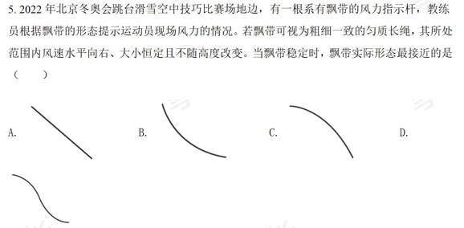
原始配图 1 · 原题及原图读题与思路
截取某点到自由端的整段飘带，它所受风力与重力都随截取长度成比例。
分步解析
- 对任意一点以下的飘带，设长度s、单位长度重力w、单位长度水平风力f。两种分布力合计分别为ws（向下）与fs（向右）。
- 该段静止，截口张力必须与合外力反向，因此张力方向相对竖直的夹角满足tanθ=f/w，与s无关。
- 柔软长绳在每一点的切线方向与张力方向相同。所有点切线倾角相同，飘带呈一条斜直线，即A。
检查与易错点
弯曲形态通常来自风速随高度变化、受力不均匀、材料弯曲刚度等；题中已把这些因素排除。
本题来源：paper · cross · drive-ref-1
返回一、选择题（24分）
题目与已知条件
如图，理想变压器原、副线圈总匝数相同，滑动触头 初始位置在副线圈正中间，输入端接入电压有效值恒定的交变电源。定值电阻 的阻值为 ，滑动变阻器 的最大阻值为 ，滑片 初始位置在最右端。理想电压表V的示数为 ，理想电流表A的示数为 。下列说法正确的是（ ）
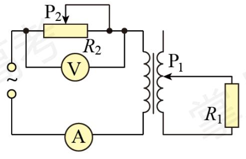
原可调变压器电路，P₁为副线圈触头、P₂为串联变阻器滑片，连接保持原图。A.保持 位置不变， 向左缓慢滑动的过程中， 减小， 不变
B.保持 位置不变， 向左缓慢滑动的过程中， 消耗的功率增大
C.保持 位置不变， 向下缓慢滑动的过程中， 减小， 增大
D.保持 位置不变， 向下缓慢滑动的过程中， 消耗的功率减小
查看原题图／原始配图
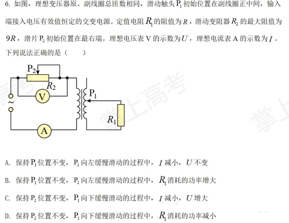
原始配图 1 · 原题及原图读题与思路
原边串联的是可变R₂，副边负载是固定R₁=R，电压表跨在R₂两端。看清电路后再讨论两个滑片。
分步解析
- 记输入电压U₀、匝数比n=N₁/N₂。副边负载在原边对应n²R，原边电流I=U₀/(R₂+n²R)，电压表读数U=IR₂。初态副边只接总匝数的一半，故n=2。
- 保持P₁不动，P₂向左使R₂减小，I增大；U=U₀R₂/(R₂+4R)减小，A错误。负载功率P₁=n²I²R随I增加而增大，B正确。
- 保持P₂不动时R₂=9R，P₁向下使副边有效匝数减小，n由2逐渐增大。I减小，U=9RI也减小，因此C说U增大错误。
- 负载功率P₁=U₀²n²/[R(n²+9)²]。写成P₁=U₀²/{R[n²+18+81/n²]}。由n²+81/n²≥18，在n=3时功率最大；n从2上升时功率先增后减，D错误。
检查与易错点
原线圈两端电压并非恒等于输入电压，因为R₂分走一部分电压。判别功率变化须注意n=3的转折点。
本题来源：paper · cross · drive-ref-1
本题共4小题，每小题5分，共20分。在每小题给出的四个选项中，有多项符合题目要求。全部选对的得5分，选对但不全的得3分，有选错的得0分。
相关题目：第 7 题 · 第 8 题 · 第 9 题 · 第 10 题
返回二、选择题（20分）
题目与已知条件
神舟十三号返回舱进入大气层一段时间后，逐一打开引导伞、减速伞、主伞，最后启动反冲装置，实现软着陆。某兴趣小组研究了减速伞打开后返回舱的运动情况，将其运动简化为竖直方向的直线运动，其 图像如图所示。设该过程中，重力加速度不变，返回舱质量不变，下列说法正确的是（ ）
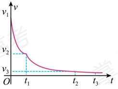
原返回舱v-t曲线及v₁、v₂、v₃与t₁、t₂、t₃位置，曲线形状不重构。A.在 时间内，返回舱重力的功率随时间减小
B.在 时间内，返回舱的加速度不变
C.在 时间内，返回舱的动量随时间减小
D.在 时间内，返回舱的机械能不变
查看原题图／原始配图
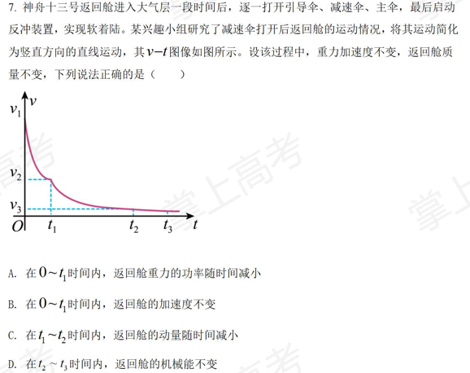
原始配图 1 · 原题及原图所用高中知识
v—t图像斜率；重力功率；动量；机械能。
读题与思路
下降速度取正，图像给的是速度大小随时间的变化。机械能还包含高度变化引起的势能变化。
分步解析
- 重力做功功率P=mgv。0至t₁速度逐渐减小，所以重力功率减小，A正确。
- 0至t₁的v—t曲线不是直线，斜率不断变化，加速度不恒定，B错误。
- t₁至t₂速度减小，质量不变，动量大小p=mv减小，C正确。
- t₂至t₃近似匀速下降，动能近似不变，但重力势能持续减小，机械能减小，D错误。
检查与易错点
受到阻力时，匀速运动不能推出机械能守恒；重力释放的能量转化为内能等。
本题来源：paper · cross · drive-ref-1
返回二、选择题（20分）
题目与已知条件
如图，火星与地球近似在同一平面内，绕太阳沿同一方向做匀速圆周运动，火星的轨道半径大约是地球的1.5倍。地球上的观测者在大多数的时间内观测到火星相对于恒星背景由西向东运动，称为顺行；有时观测到火星由东向西运动，称为逆行。当火星、地球、太阳三者在同一直线上，且太阳和火星位于地球两侧时，称为火星冲日。忽略地球自转，只考虑太阳对行星的引力，下列说法正确的是（ ）
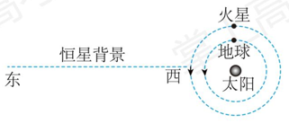
原火星冲日及恒星背景东/西方向示意图。A.火星的公转周期大约是地球的 倍
查看原题图／原始配图
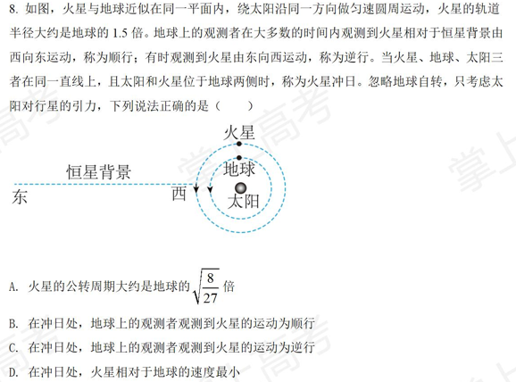
原始配图 1 · 原题及原图读题与思路
在冲日位置两行星速度同向，但内侧地球速度更大，地球会“赶过”火星。
分步解析
- 由T²/r³相同得T火/T地=(1.5)3/2=√(27/8)，原选项写成其倒数√(8/27)，A错误。
- 圆轨道v=√(GM日/r)，地球速度大于火星速度。冲日时二者沿同方向运动，火星相对地球的运动方向与地球速度相反，观测为由东向西的逆行，C正确、B错误。
- 两行星速率各自不变。作速度矢量相减，所得相对速度的大小至少为两速率之差；只有两速度同向时取到这个最小值。冲日时两速度同向，因此相对速度最小，D正确。
检查与易错点
“逆行”是相对恒星背景的视运动，火星本身绕太阳的公转方向没有反转。
本题来源：paper · cross · drive-ref-1
返回二、选择题（20分）
题目与已知条件
球形飞行器安装了可提供任意方向推力的矢量发动机，总质量为 。飞行器飞行时受到的空气阻力大小与其速率平方成正比（即 ， 为常量）。当发动机关闭时，飞行器竖直下落，经过一段时间后，其匀速下落的速率为10 m/s；当发动机以最大推力推动飞行器竖直向上运动，经过一段时间后，飞行器匀速向上的速率为5 m/s。重力加速度大小为 ，不考虑空气相对于地面的流动及飞行器质量的变化，下列说法正确的是（ ）
B.当飞行器以5 m/s匀速水平飞行时，发动机推力的大小为
C.发动机以最大推力推动飞行器匀速水平飞行时，飞行器速率为
D.当飞行器以5 m/s的速率飞行时，其加速度大小可以达到
查看原题图／原始配图
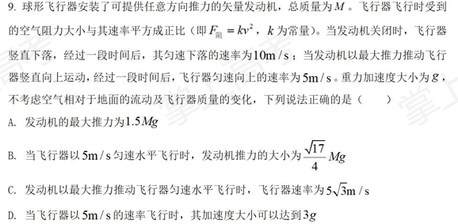
原始配图 1 · 原题及原图读题与思路
用两次竖直匀速过程求出阻力系数k与最大推力，再对水平运动作矢量平衡。
分步解析
- 无动力匀速下落时Mg=k×10²，故k=Mg/100。以最大推力匀速上升5 m/s时Fmax=Mg+k×5²=5Mg/4，A给1.5Mg错误。
- 以5 m/s匀速水平运动，水平阻力为Mg/4，发动机还要提供竖直分力Mg。推力大小F=√[(Mg)²+(Mg/4)²]=√17 Mg/4，B正确。
- 最大推力用于水平匀速飞行时，水平分力为√[(5Mg/4)²−(Mg)²]=3Mg/4。令kv²=3Mg/4，得v=5√3 m/s，C正确。
- 速率为5 m/s时阻力恒为Mg/4。所有力同向可获得最大合力：让飞行器此时向上运动，阻力向下，发动机推力也取向下，合力最大为5Mg/4+Mg+Mg/4=5Mg/2，加速度最大2.5g，达不到3g，D错误。
检查与易错点
“推力可任意方向”允许推力与当前速度反向。最大加速度的判断必须同时考虑重力和阻力方向。
本题来源：paper · cross · drive-ref-1
返回二、选择题（20分）
题目与已知条件
如图，间距 的U形金属导轨，一端接有0.1 Ω的定值电阻 ，固定在高 的绝缘水平桌面上。质量均为0.1 kg的均质导体棒a和b静止在导轨上，两导体棒与导轨接触良好且始终与导轨垂直，接入电路的阻值均为0.1 Ω，与导轨间的动摩擦因数均为0.1（设最大静摩擦力等于滑动摩擦力），导体棒a距离导轨最右端1.74 m。整个空间存在竖直向下的匀强磁场（图中未画出），磁感应强度大小为0.1 T。用 沿导轨水平方向的恒力拉导体棒a，当导体棒a运动到导轨最右端时，导体棒b刚要滑动，撤去 ，导体棒a离开导轨后落到水平地面上。重力加速度取 ，不计空气阻力，不计其他电阻，下列说法正确的是（ ）
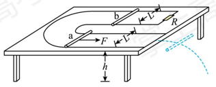
原U形导轨、a/b棒、L、R与桌高h示意图。A.导体棒a离开导轨至落地过程中，水平位移为0.6 m
C.导体棒a在导轨上运动的过程中，导体棒b有向右运动的趋势
D.导体棒a在导轨上运动的过程中，通过电阻 的电荷量为0.58 C
查看原题图／原始配图
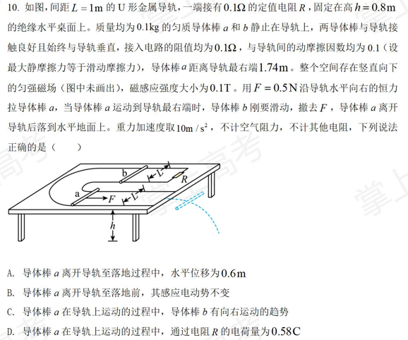
原始配图 1 · 原题及原图所用高中知识
运动电动势；并联分流；安培力临界；电荷量。
读题与思路
运动棒a相当于带内阻的电源，静止棒b和定值电阻R并联。先利用b刚滑动的临界条件求a末速度。
分步解析
- 三处电阻均为0.1 Ω。b与R并联为0.05 Ω，总电阻0.15 Ω。棒a的电流I=BLv/0.15，流经b的电流为I/2。
- b刚要滑动时安培力等于最大静摩擦力：B(I/2)L=μmg=0.1×0.1×10=0.1 N。由B=0.1 T、L=1 m解得I=2 A，v=0.15×2/(0.1×1)=3 m/s。
- 落地时间t=√(2h/g)=√(2×0.8/10)=0.4 s，水平位移x=vt=1.2 m，A的0.6 m错误。离轨后水平速度仍为3 m/s，竖直运动与竖直磁场平行，不贡献切割电动势，所以ℰ=BLv恒定，B正确。
- 沿原图两条弯成U形的导轨追踪电流：a、b位于U形的不同侧，两棒中的电流在空间上同向。a向右切割磁场时其安培力向左，b的安培力也向左，C错误。不能把两棒误看成放在同一段直线平行导轨上。
- 运动过程中I与v成正比。把时间分成小段累加，电荷总量等于BL乘总位移再除电阻：qa=BLΔx/0.15=0.1×1×1.74/0.15=1.16 C。b与R等电阻分流，所以qR=0.58 C，D正确。
检查与易错点
原数据Δx=1.74 m不能误读为1.4 m。离轨后即使回路断开，棒两端仍可能有运动电动势，不能把无闭合电流等同于无电动势。
本题来源：paper · cross · drive-ref-1
第11—14题为必考题，每个试题考生都必须作答。第15、16题为选考题，考生根据要求作答。
（一）必考题，共43分。第11题6分、第12题9分、第13题13分、第14题15分。
相关题目：第 11 题 · 第 12 题 · 第 13 题 · 第 14 题
返回三、非选择题（56分）
题目与已知条件
（6分）
小圆同学用橡皮筋、同种一元硬币、刻度尺、塑料袋、支架等，设计了如图(a)所示的实验装置，测量冰墩墩玩具的质量。主要实验步骤如下：
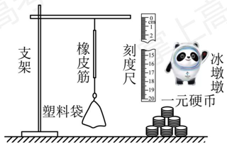
图(a)原橡皮筋测量装置；尺与支架、塑料袋等位置保持原样。（1）查找资料，得知每枚硬币的质量为6.05 g；
（2）将硬币以5枚为一组逐次加入塑料袋，测量每次稳定后橡皮筋的长度 ，记录数据如下表：
| 序号 | 1 | 2 | 3 | 4 | 5 |
|---|
| 硬币数量 | 5 | 10 | 15 | 20 | 25 |
|---|
| 长度 | 10.51 | 12.02 | 13.54 | 15.05 | 16.56 |
|---|
（3）根据表中数据在图(b)上描点，绘制图线；______
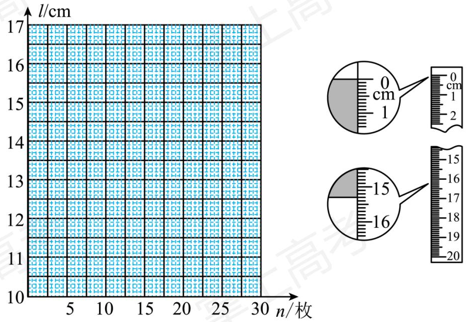
图(b)作图网格及图(c)两处刻度尺放大图；全部细格、示数与标记边缘逐像素保留。（4）取出全部硬币，把冰墩墩玩具放入塑料袋中，稳定后橡皮筋长度的示数如图(c)所示，此时橡皮筋的长度为______cm；
（5）由上述数据计算得冰墩墩玩具的质量为______g（计算结果保留3位有效数字）。
查看原题图／原始配图
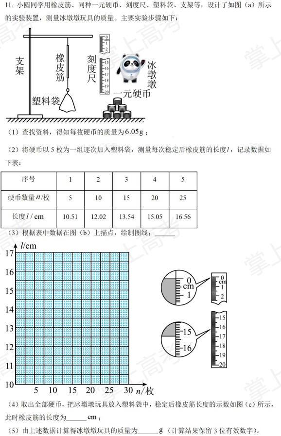
原始配图 1 · 原题及原图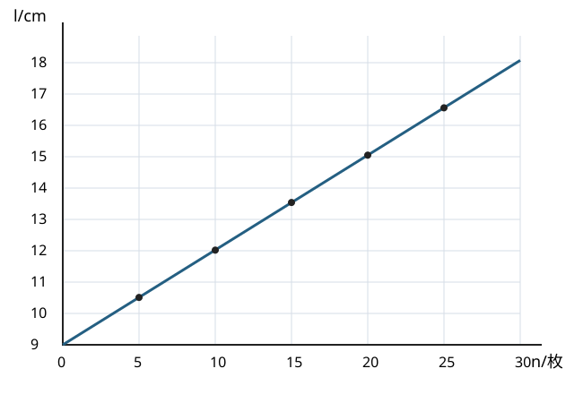
修订前解析配图 2 · 原创标定图所用高中知识
胡克定律近似；线性标定；刻度尺读数；图像斜率与截距。
读题与思路
把硬币数量作为标定质量，图线截距包含塑料袋作用，不把橡皮筋总长度当作伸长量。
分步解析
- 每枚硬币6.05 g。根据五组数据画l—n直线，斜率约(16.56−10.51)/(25−5)=0.3025 cm/枚，截距约l₀=10.51−0.3025×5=8.9975 cm≈9.00 cm。这里l₀是只挂空塑料袋时的长度。
- 图(c)上方放大图显示尺的零刻度与橡皮筋上端对齐；下方放大图中橡皮筋下端界线位于15.3 cm与15.4 cm之间正中附近，估读到0.01 cm，读数为15.35 cm。
- 玩具对应的等效硬币数n=(15.35−9.00)/0.3025≈20.99，因此质量m=20.99×6.05 g≈127 g（3位有效数字）。
- 下图显示五个测量点及直线，不能将数据逐点连成折线。原创标定图
答案
（3）描点后作一条倾斜直线（图见解析）；（4）15.35；（5）127。
检查与易错点
玩具长度略大于20枚硬币对应的15.05 cm，质量应略大于20×6.05=121 g；127 g符合这个直接检查。刻度尺读数要估读到最小分度的下一位。
本题来源：paper · cross · drive-ref-1
返回三、非选择题（56分）
题目与已知条件
（9分）
小梦同学自制了一个两挡位（“×1”“×10”）的欧姆表，其内部结构如图所示， 为调零电阻（最大阻值为 ），、、 为定值电阻（），电流计G的内阻为 （）。用此欧姆表测量一待测电阻的阻值，回答下列问题：
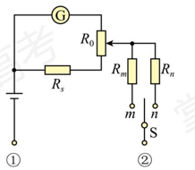
原两挡欧姆表内部电路，保留端点①②、R₀、Rs、Rm、Rn及双掷开关S连接。（1）短接①②，将单刀双掷开关S与m接通，电流计G示数为 ；保持电阻 滑片位置不变，将单刀双掷开关S与n接通，电流计G示数变为 ，则 ______（填“大于”或“小于”）；
（2）将单刀双掷开关S与n接通，此时欧姆表的挡位为______（填“×1”或“×10”）；
（3）若从“×1”挡位换成“×10”挡位，调整欧姆零点（欧姆零点在电流计G满偏刻度处）时，调零电阻 的滑片应该______调节（填“向上”或“向下”）；
（4）在“×10”挡位调整欧姆零点后，在①②间接入阻值为100 Ω的定值电阻 ，稳定后电流计G的指针偏转到满偏刻度的 ；取走 ，在①②间接入待测电阻 ，稳定后电流计G的指针偏转到满偏刻度的 ，则 ＝______Ω。
查看原题图／原始配图
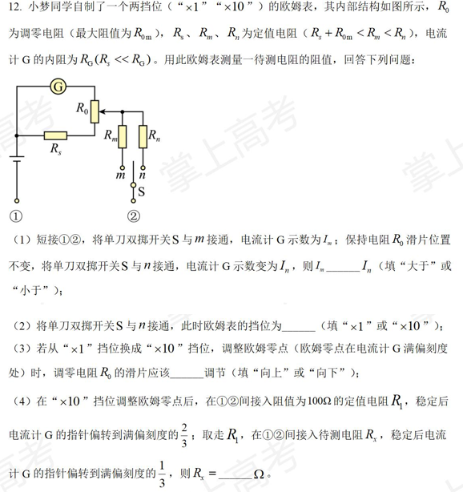
原始配图 1 · 原题及原图所用高中知识
串并联电路；分流；欧姆调零；表头偏转比例。
读题与思路
Rm<Rn决定量程。调零后不再移动滑片，表头电流与总电流保持固定比例，可把两次读数转为总电阻比。
分步解析
- 保持调零滑片不动，开关接m时串联电阻较小，总电流较大；并联部分分流比例固定，表头电流也较大，所以Im>In。
- 接n时内电阻更大，半偏对应待测电阻也更大，量程倍率为×10。
- 从×1换到×10，总电流变小。为了短接时恢复表头满偏，应增大经过G支路的电流比例：滑片向上，G支路串联部分减小，另一支路部分增大，所以选“向上”。
- 令调零后①②短接时整表等效内电阻为r，满偏表头电流为IG0。外接100 Ω后分流比例未变，IG/IG0=r/(r+100)=2/3，解得r=200 Ω。
- 接未知电阻时r/(r+Rx)=1/3，因此Rx=2r=400 Ω。
答案
（1）大于；（2）×10；（3）向上；（4）400 Ω。
检查与易错点
换挡后必须重新欧姆调零。最后一步使用的是同一次调零后固定的分流比例，不需要把电流计当成无内阻的理想电流表。
本题来源：paper · cross · drive-ref-1
返回三、非选择题（56分）
题目与已知条件
（13分）
如图，两个定值电阻的阻值分别为 和 ，直流电源的内阻不计，平行板电容器两极板水平放置，板间距离为 ，板长为 ，极板间存在方向水平向里的匀强磁场。质量为 、带电量为 的小球以初速度 沿水平方向从电容器下极左侧边缘A点进入电容器，做匀速圆周运动，恰从电容器上极右侧边缘离开电容器。此过程中，小球未与极板发生碰撞，重力加速度大小为 ，忽略空气阻力。
（1）求直流电源的电动势 ；
（2）求两极板间磁场的磁感应强度 ；
（3）在图中虚线的右侧设计一匀强电场，使小球离开电容器后沿直线运动，求电场强度的最小值 。
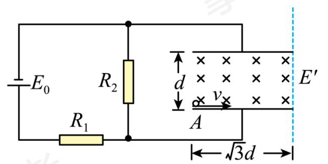
原电源分压电路与两平行板，板间d、板长√3d、入射点A及右侧场区边界。查看原题图／原始配图
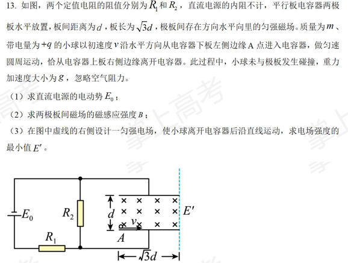
原始配图 1 · 原题及原图所用高中知识
电场力与重力平衡；圆轨迹几何；最小电场。
读题与思路
匀速圆周运动要求恒定重力与恒定电场力先抵消，洛伦兹力单独提供向心力。离开后的直线条件只要求合力垂直速度的分量为零。
分步解析
- 两板间qE=mg，板间电压U=Ed=mgd/q。电容器稳态不导直流，板间电压等于R₂两端电压U=E₀R₂/(R₁+R₂)，故E₀=mgd(R₁+R₂)/(qR₂)。
- 粒子圆轨迹初始切线水平，圆心在A正上方。半径记r，右上端点相对A为(√3d,d)，满足(r−d)²+3d²=r²，得r=2d。于是qvB=mv²/r，B=mv/(2qd)。
- 端点处半径与竖直方向夹60°，速度与水平夹60°。要离开后保持直线，合力垂直于速度的分量应为零。重力在垂直速度方向分量为mg cos60°=mg/2。
- 最小电场力恰好全部用于抵消该分量，因此qE′min=mg/2，E′min=mg/(2q)。场方向垂直于出射速度且指向左上方，与水平向左方向成30°。沿速度方向余下的重力分量只改变速率，不使轨迹弯曲。
答案
（1）E₀=mgd(R₁+R₂)/(qR₂)；（2）B=mv/(2qd)；（3）E′min=mg/(2q)。
检查与易错点
不能要求离开后匀速，把全部重力都抵消会得到过大的场强mg/q。题目只说沿直线运动。
本题来源：paper · cross · drive-ref-1
返回三、非选择题（56分）
题目与已知条件
（15分）
如图(a)，质量为 的篮球从离地 高度处由静止下落，与地面发生一次非弹性碰撞后反弹至离地 的最高处。设篮球在运动过程中所受空气阻力的大小是篮球所受重力的 倍（ 为常数且 ），且篮球每次与地面碰撞的碰后速率与碰前速率之比相同，重力加速度大小为 。
（1）求篮球与地面碰撞的碰后速率与碰前速率之比；
（2）若篮球反弹至最高处 时，运动员对篮球施加一个向下的压力 ，使得篮球与地面碰撞一次后恰好反弹至 的高度处，力 随高度 的变化如图(b)所示，其中 已知，求 的大小；
（3）篮球从 高度处由静止下落后，每次反弹至最高点时，运动员拍击一次篮球（拍击时间极短），瞬间给其一个竖直向下、大小相等的冲量 ，经过 次拍击后篮球恰好反弹至 高度处，求冲量 的大小。
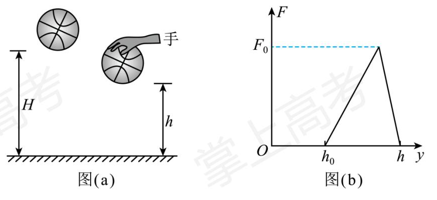
图(a)篮球下落/反弹高度H、h；图(b)压力F随y的原三角形图，标有h₀、h、F₀，无补造峰值横坐标。查看原题图／原始配图
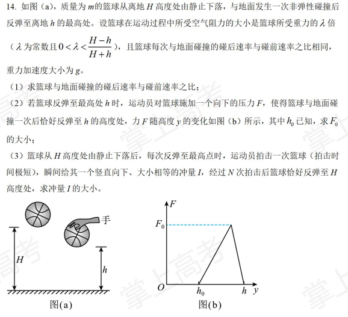
原始配图 1 · 原题及原图所用高中知识
分阶段受力；动能定理；碰撞速度比；等比数列。
读题与思路
下降时阻力向上、上升时阻力向下。先从第一次自由反弹标定碰撞系数，再将每次拍击转化为相同的初速度增量。
分步解析
- 下降加速度为(1−λ)g，从H静止下落，碰前速率v−=√[2(1−λ)gH]。反弹上升到h时，碰后速率v+=√[2(1+λ)gh]。速度比e=v+/v−=√[(1+λ)h/((1−λ)H)]。
- 第(2)问再从h反弹回h，所需碰后速率不变，碰撞系数也不变，所以碰前动能必须仍为m(1−λ)gH。自然下落h仅给动能m(1−λ)gh，外力需补功WF=m(1−λ)g(H−h)。
- 图示F—y三角形面积为F₀(h−h₀)/2；下降时力与位移同向，做正功。故F₀=2mg(1−λ)(H−h)/(h−h₀)。
- 第(3)问设ρ=h/H，首次自由反弹后的最高点h₀*=h。每次最高点速度为0，短时冲量I使其立即获得向下初速u=I/m。若第n次拍击前高度为hn−1，碰前速度平方为u²+2(1−λ)ghn−1。
- 碰后速度平方乘e²，上升到hn后停止，故2(1+λ)ghn=e²[u²+2(1−λ)ghn−1]。代入e²得hn=ρhn−1+ρI²/[2m²g(1−λ)]。
- 依次代入，hN=ρNh+[I²/(2m²g(1−λ))](ρ+ρ²+…+ρN)。等比和为ρ(1−ρN)/(1−ρ)。
- 令hN=H，整理得I=m√{2g(1−λ)(H−ρNh)(1−ρ)/[ρ(1−ρN)]}，其中ρ=h/H。
答案
（1）√[(1+λ)h/((1−λ)H)]；（2）2mg(1−λ)(H−h)/(h−h₀)；（3）I=m√{2g(1−λ)(H−ρNh)(1−ρ)/[ρ(1−ρN)]}，ρ=h/H；即I=√{2m²g(1−λ)(HN+1−hN+1)(H−h)/[h(HN−hN)]}。
检查与易错点
第(2)问的给定h₀是施力图横截距，第(3)问的递推初始高度是h，二者不能混淆。题设λ<(H−h)/(H+h)保证e<1，符合非弹性碰撞。
本题来源：paper · cross · drive-ref-1
请考生从两道题中任选一题作答。如果多做，则按第一题计分。
相关题目：第 15 题 · 第 16 题
返回（二）选考题（13分）
题目与已知条件
第15题［物理——选修3—3］（13分）。
（1）（5分）利用“涡流效应”可实现冷热气体的分离。如图，一冷热气体分离装置由喷嘴、涡流室、环形管、分离挡板和冷热两端管等构成。高压氮气由喷嘴切向流入涡流室中，然后以螺旋方式在环形管中向右旋转前进，分子热运动速率较小的气体分子将聚集到环形管中心部位，而分子热运动速率较大的气体分子将聚集到环形管边缘部位。气流到达分离挡板处时，中心部位气流与分离挡板碰撞后反向，从A端流出，边缘部位气流从B端流出。下列说法正确的是______（选对1个得2分，选对2个得4分，选对3个得5分。每选错1个扣3分，最低得分为0分）。
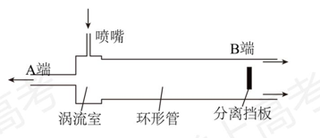
冷热气体分离装置原图：A端、B端、喷嘴、涡流室、环形管、分离挡板。A．A端为冷端，B端为热端
B．A端流出的气体分子热运动平均速率一定小于B端流出的
C．A端流出的气体内能一定大于B端流出的
D．该装置气体进出的过程满足能量守恒定律，但违背了热力学第二定律
E．该装置气体进出的过程既满足能量守恒定律，也满足热力学第二定律
（2）（8分）如图，小赞同学设计了一个液体拉力测量仪。一个容积V₀=9.9 L的导热汽缸下接一圆管，用质量m₁=90 g、横截面积S=10 cm²的活塞封闭一定质量的理想气体，活塞与圆管壁间摩擦不计。活塞下端用轻质细绳悬挂一质量m₂=10 g的U形金属丝，活塞刚好处于A位置。将金属丝部分浸入待测液体中，缓慢升起汽缸，使金属丝从液体中拉出，活塞在圆管中的最低位置为B。已知A、B间距离h=10 cm，外界大气压强p₀=1.01×10⁵ Pa，重力加速度取10 m/s²，环境温度保持不变。求（i）活塞处于A位置时，汽缸中的气体压强p₁；（ii）活塞处于B位置时，液体对金属丝拉力F的大小。
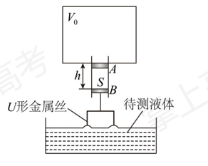
原液体拉力测量装置：V₀、A/B、h、S、U形金属丝及待测液体。查看原题图／原始配图
原始配图 1原始配图 2
所用高中知识
分子热运动；内能；热力学定律；活塞受力；玻意耳定律。
读题与思路
第(1)问区分温度与内能总量；第(2)问气体在活塞上方，大气压向上托住活塞与金属丝。
分步解析
- 第(1)问中心气流分子平均热运动速率较小，流向A，为冷端；边缘流向B，为热端，A、B正确。内能总量还与气体质量有关，不能只从温度判断一定大小，C错误。装置有高压气体输入，并非无外部条件地自发把冷气变冷、热气变热，过程遵守能量守恒和热力学第二定律，E正确、D错误。
- 第(2)问A位置，以活塞和金属丝为整体，p₀S=p₁S+(m₁+m₂)g。代入S=10⁻³ m²、总重1.0 N，p₁=1.01×10⁵−1.0/10⁻³=1.00×10⁵ Pa。
- 到B时气体体积增加Sh=10⁻⁴ m³=0.1 L，VB=10.0 L。导热、缓慢、环境温度不变，等温关系p₁V₀=p₂(V₀+Sh)给p₂=1.00×10⁵×9.9/10=9.9×10⁴ Pa。
- 金属丝所受液体拉力向下，整体平衡为p₀S=p₂S+(m₁+m₂)g+F。因此F=(p₀−p₂)S−1.0=2.0−1.0=1.0 N。
答案
（1）ABE；（2）（i）1.00×10⁵ Pa；（ii）1.0 N。
检查与易错点
活塞向下移动扩大上方气体体积，不能误判为压缩。大气压给定是1.01×10⁵ Pa。
本题来源：paper · cross · drive-ref-1
返回（二）选考题（13分）
题目与已知条件
第16题［物理——选修3—4］（13分）。
（1）（5分）下端附着重物的粗细均匀木棒，竖直浮在河面，在重力和浮力作用下，沿竖直方向做频率为1 Hz的简谐运动；与此同时，木棒在水平方向上随河水做匀速直线运动，如图(a)所示。以木棒所受浮力F为纵轴，木棒水平位移x为横轴建立直角坐标系，浮力F随水平位移x的变化如图(b)所示。已知河水密度为ρ，木棒横截面积为S，重力加速度大小为g。下列说法正确的是______（选对1个得2分，选对2个得4分，选对3个得5分。每选错1个扣3分，最低得分为0分）。
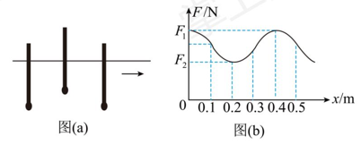
原木棒运动与F-x图：0.1—0.5 m刻度及F₁、F₂保留。A．x从0.05 m到0.15 m的过程中，木棒的动能先增大后减小
B．x从0.21 m到0.25 m的过程中，木棒加速度方向竖直向下，大小逐渐变小
C．x=0.35 m和x=0.45 m时，木棒的速度大小相等，方向相反
D．木棒在竖直方向做简谐运动的振幅为(F₁−F₂)/(2ρSg)
E．木棒的运动为向x轴正方向传播的机械横波，波速为0.4 m/s
（2）（8分）如图，某种防窥屏由透明介质和对光完全吸收的屏障构成，其中屏障垂直于屏幕平行排列，可实现对像素单元可视角度θ的控制（可视角度θ定义为某像素单元发出的光在图示平面内折射到空气后最大折射角的2倍）。透明介质的折射率n=2，屏障间隙L=0.8 mm。发光像素单元紧贴屏下，位于相邻两屏障的正中间。不考虑光的衍射。
（i）若把发光像素单元视为点光源，要求可视角度θ控制为60°，求屏障的高度d；
（ii）若屏障高度d=1.0 mm，且发光像素单元的宽度不能忽略，求像素单元宽度x最小为多少时，其可视角度θ刚好被扩为180°（只要看到像素单元的任意一点，即视为能看到该像素单元）。
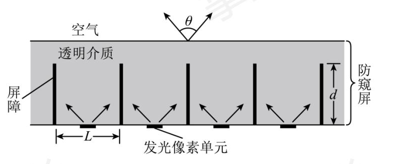
原防窥屏几何图：屏障间隙L、高度d、透明介质及可视角度θ。查看原题图／原始配图
原始配图 1原始配图 2
所用高中知识
简谐运动；速度合成；阿基米德原理；折射定律与临界角。
读题与思路
浮棒只有一个物体的复合运动；防窥屏最大可视角由刚好擦过屏障顶端的光线决定。
分步解析
- 第(1)问，浮力位于(F₁+F₂)/2时竖直方向合力为零，对应x=0.1、0.3、0.5 m等平衡位置。0.05至0.15 m经历平衡位置，竖直速率先增后减，水平速率不变，因此总动能先增后减，A正确。
- 0.21至0.25 m时浮力由最小值向中值增大，但仍小于重力，合力向下且减小，B正确。0.35与0.45 m竖直速度等大反向，但水平速度一直同向，所以总速度方向并不相反，C错误。
- 上下极端位置的浸入长度相差2A，浮力差F₁−F₂=2ρSgA，故A=(F₁−F₂)/(2ρSg)，D正确。这是同一木棒平移与振动的合成，没有振动在多个介质质点间传播，E错误。
- 第(2)(i)，最大折射角r=θ/2=30°。由n sin i=sin r得sin i=1/4。几何关系tan i=(L/2)/d，cos i=√15/4，故d=(L/2)√15=0.4√15 mm≈1.55 mm。
- 第(2)(ii)，可视角刚扩为180°对应折射光沿界面掠射，r→90°，介质内入射角达到临界角C，sin C=1/n=1/2，C=30°。这时是临界折射，不是“已经全反射”。
- 最有利光线从像素左边缘出发，经右侧屏障顶端射出（另一侧对称）。其水平距离为(L+x)/2，满足(L+x)/2=d tan C=d/√3。因此x=2d/√3−L=(2/√3−0.8) mm≈0.355 mm。
答案
（1）ABD；（2）（i）0.4√15 mm≈1.55 mm；（ii）(2/√3−0.8) mm≈0.355 mm（约0.35 mm）。
检查与易错点
折射角相对界面法线定义。全反射时没有出射光，不可能靠全反射“看到”像素；本题取临界时的掠射边界。
本题来源：paper · cross · drive-ref-1
题源与核验说明
- 2022.html旧版解析文件；SHA-256：2cfda72f264f4617b45616df356bd8497e9a61e50328f4c5cecc1d03070f90d9
- 2022年高考真题——物理（湖南卷） Word版含解析【KS5U 高考】.doc所附参考资料；SHA-256：7a6236bc5307ec474cb9e199e6230388b7bcdb90e1940221f64bc03fcbb6080c
- 2022-physics-original.pdf原卷文件；SHA-256：f6138ab3222ae081511344ab591efa4ba46452b92fc95db14b5df9f5ab5a19c4
- 中国教育在线：2022湖南物理原卷PDF（9页）由2022湖南高考物理试题页面的实际下载链接取得；逐页核对原题1—16、必考6/9/13/15分及两道选考5+8分。第9页为空白。PDF部分字图较低清，采用同卷清晰图和所附参考交叉。
- 中国教育在线 2022湖南物理清晰解析版公开25页清晰重排图版。q1—q14完整题图及选考插图裁自存留h22s01—25各页；题15、16按原卷编号转录全文，重排来源曾拆为15—18。原题图、表、选项均保留，原创q11-fit.svg按五组数据绘制。解析中的42.69 g和“全反射”误述未照抄。
- 2022年湖南高考物理试题2026-10-06核对页面卷名与实际链接；采用物理PDF，排除旧来源列表误连的生物PDF。